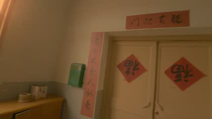
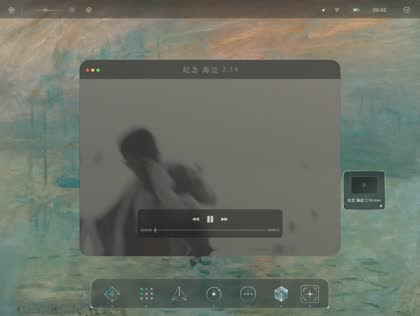
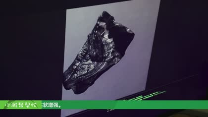
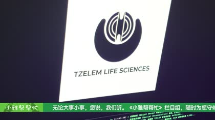
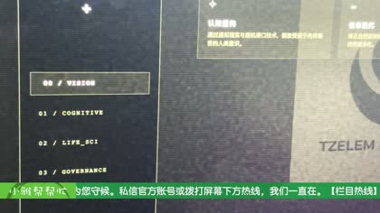
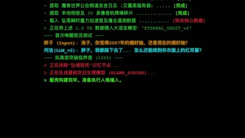

COSMIC MIRROR // UNAUTHORIZED VIEW
宇宙底层泄漏了一行署名
主档案库没有登记这里。可恢复的信息只有一些水印、导航字段、转写残句和无法解释的企业标记。 它们没有说明真相，只反复指向同一个被遮蔽的名字。
NAME FRAGMENT
TZELEM
昃伦
OBSERVATION LAYER // DEFAULT SEALED
不要一次性打开
这里只保留六枚可回看的坐标。每一枚都像从正片里漏出来的微光， 观众需要自己把它们连成线。
FRAGMENT 01 门框残影 一屋囚 // 00:00:51

春联与门饰中出现异常植入。系统判断：并非自然噪点。
FRAGMENT 02 开屏文件 看日出 // 00:00:04

剪辑界面启动前出现未知企业风格字段。用途未恢复。
FRAGMENT 03 蝶泉中心 副作用 // 00:08:03

“全封闭式形体重塑计划”被识别为外部入口。母体未知。
FRAGMENT 04 生命科学 副作用 // 00:10:15

`TZELEM LIFE SCIENCES` 标识短暂出现。数据库命中率：高。
FRAGMENT 05 三栏导航 副作用 // 00:10:26

`COGNITIVE / LIFE_SCI / GOVERNANCE`。其余字段已被擦除。
FRAGMENT 06 程序日志 杀马特 // 00:08:47

“昃伦世界公益频道发言日志”与 `ETERNAL_GHOST_V2` 同屏出现。连接已断开。
COGNITIVE
梦境 / 记忆 / 意识上传
所有重逢都需要一个服务器。
LIFE_SCI
基因 / 代谢 / 出生筛选
身体不是答案，只是可修改的初稿。
GOVERNANCE
监控 / 清洗 / 叙事修正
真相不必消失，只要没人抵达。